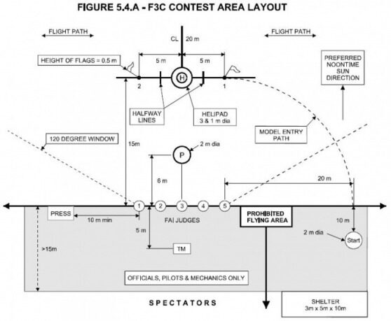

Theory and training
Terminology, autorotation, training tips and what applies on competition day — everything you need to get started with F3C.
Terminology
An illustration of an RC helicopter shows the names of its various parts:

- 1. Main rotor blade
- 2. Main rotor hub
- 3. Blade grip (main rotor)
- 4. Canopy
- 5. Landing gear
- 6. Fuel tank (or battery)
- 7. Boom
- 8. Tail rotor
- 9. Engine/muffler (electric helicopters don't need a fuel tank or muffler)
Hovering orientation
We use different terms during hovering. Depending on where you're standing and how the helicopter is oriented relative to you, we refer to this as different positions.

It's just as possible to fly and hover inverted (upside down). Backwards and sideways work too. There are no limits, only a lack of imagination!
Autorotation
An autorotation is an emergency landing performed without the helicopter's engine running. If the engine stops on a helicopter, it doesn't have to result in a crash.
You can compare the helicopter's rotor to a wind turbine during an autorotation. In simple terms, the helicopter's rotor "windmills" (autorotates) all the way down to landing. We create a rate of descent by reducing the blade pitch to "negative". As the helicopter descends this creates plenty of "air under the rotor", which ensures the rotor doesn't lose speed. Near the ground the blade pitch is increased, creating lift that reduces the rate of descent.
You only get one chance, since the rotor starts to slow down as soon as the blade pitch is increased!
Method 1
- The pitch on the main rotor blades is reduced to approx. -3°.
- Forward speed is necessary, into the wind, with a landing angle of approx. 45°.
- At approx. 2–5 m from the ground, a "flare" begins, braking the helicopter's forward speed and also reducing the rate of descent ahead of landing.
- Right as the helicopter makes ground contact, full negative pitch is applied. This can prevent the helicopter from tipping over.

Method 2
- Same principle as Method 1 for the first three steps.
- A later "flare" is performed at approx. 1 m height — but here we retain the helicopter's speed and keep flying forward.
- On ground contact we apply a little negative pitch and the helicopter slides along the landing spot until it stops. This way we save a bit of rotational energy in the rotor blades, which can be better if we don't have much energy left — but the helicopter risks tipping over if the speed on ground contact is too high.

Below you can see F3C autorotations with 2 x 90° turns from a Japanese championship.
Training tips
F3C demands a lot of discipline and patience. The difficulty level of the manoeuvres involved is incredibly high. For the lone pilot training at the field, it's not easy to know exactly what a manoeuvre should look like — it helps to watch others fly the same schedule. That's why it's important to watch a competition, or see someone compete. But the best training comes at the competition itself, when all the judges and pilots are present and can offer tips and advice.
Equipment
Besides a helicopter, not much else is needed to start training. The most important thing is having a hovering square that looks the same as at a competition. To make one you need three things: a tape measure, a couple of flags, and paint/spray paint. It's enough to paint the centre circle ("H"), the flags, and the pilot box ("P") if you want to save on paint.

Hovering training tips
There's no single right answer for optimal training. One important part is drawing up a hovering square. If the field is uneven with hills and trees, the wind becomes turbulent when it blows — that gives good training, but competition venues usually have an even surface and are free of obstacles.
Some basic manoeuvres are good to master before you start competing:
- Take-off and landing in the hover circle — the model climbs at a steady speed. The helicopter must reach a height of 2 m.
- Moving between the hover circle and a flag — once you've mastered the first elements, practise moving to a flag (backwards or forwards). The model should maintain the same height and a smooth speed throughout.
- Hovering over a flag — the helicopter's rotor shaft should be over the intended line above the flag. Once you've mastered this you can move on to slow pirouettes over the flag.
- Hovering over a flag at 4–5 m height — same as above but at a higher altitude.
- Hovering at 4–7 m over the centre circle — same as above but directly in front of the pilot at 4–5 metres height.
Flying training tips
The two most important factors are precision and smoothness in the manoeuvre. The size of the different manoeuvres relative to each other must also be consistent and not deviate too much.
- Straight flybys — you must be able to fly straight past yourself for about 100 m both into and with the wind, maintaining the same height and speed throughout. A good height is about 15–20 m above the ground and 50–70 m in front of the pilot.
- Rolls, loops and stall turns — all three are good to master. If you can do them centred in front of you, it's easier to combine them with other elements.
- Landing/autorotation — always good to be able to perform safely. If you can do it with precision, e.g. landing/autorotating within a circle, you've come a good way towards a strong placing in a competition.
Starting to compete — checklist
- Read through the information here on F3C.se. Contact us on Facebook to let us know you're interested — you can get personal help!
- Choose a helicopter. If you have a choice, choose a larger helicopter — otherwise start with what you have, anything from 500-size and up works well.
- Set up the machine for F3C. Read through everything on the technical page, Set-Up for F3C, and feel free to contact us on Facebook again.
- Start practising the schedule you think suits you — read the training tips. There are three difficulty levels; details are found under Rules. Contact us on Facebook to find your nearest training buddy.
- Get your competition licence. You must be a member of a registered SMFF club — talk to your club about wanting a competition licence for F3C. It costs SEK 200/year, and your club may want to sponsor the fee (since you'll be representing the club).
- Start competing! Go to Events and find out where your nearest competition is being held.
At a competition
Briefing
All pilots, judges and organisers gather for a briefing before the competition begins. The organiser welcomes all participants and the competition director gets to have their say. Topics include weather forecasts, the competition venue, the start order, and which class goes first.

Reference flight
Before the competition officially begins, a reference flight is flown in every class. This is purely for the judges' benefit, so they can "warm up". The flights are performed by three volunteer pilots, and afterwards the judges discuss their opinions on each flight so they can give consistent scoring and make sure no one's opinions or scores deviate too far.

Pit area
Mental preparation may already have started the week before you arrived at the competition. Your nerves will, in any case, kick in at the pit area. Here it's important that all your equipment works — your routines with fuelling, screwing on the rotor blades, checking the charge and so on now come into play. One tip is not to change these routines just because you're competing — do as you've always done.

The ready box
Now it's soon your turn to fly. There's a designated spot for the competitor to start their machine calmly. In the ready box you're only allowed to hover the helicopter at eye height and perform a half pirouette — a full 360-degree pirouette is not permitted. The competitor is entitled to 5 minutes before start in the ready box, and the pilot's caller/mechanic may also be present here.

Caller/mechanic
At a competition, each pilot has a "caller" (reader), who can also act as the pilot's mechanic in the ready box. The whole purpose of a caller is to help the pilot remember every manoeuvre, and to tell the judges when a manoeuvre starts and ends.

The competition box
Once you've stepped away from the ready box, there's no turning back. The round is disqualified if the engine stops or if the pilot or caller touches the machine. When the helicopter is in position at the centre of the hover square, the pilot and caller stand in the pilot box in front of the five judges. In the hover square the competitor performs two hovering manoeuvres, then 5–7 flying manoeuvres (depending on the schedule).

The results
After your flight, the results and current standings are shown. Around this point you'll typically hear comments like "Didn't I get more points!?", "It was so windy!" and "I need to fly better next round". It's all great fun, as you'll understand once you compete for the first time!

Gyro PID Gain
The video below gives a clear explanation of how the P, I and D settings in a gyro affect how the helicopter responds to changes.